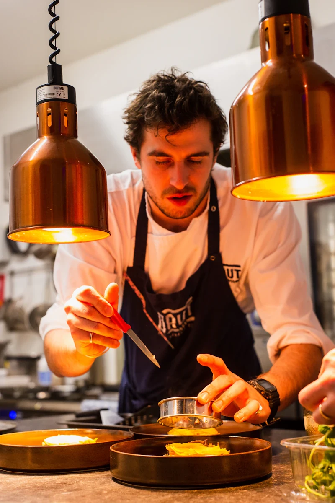
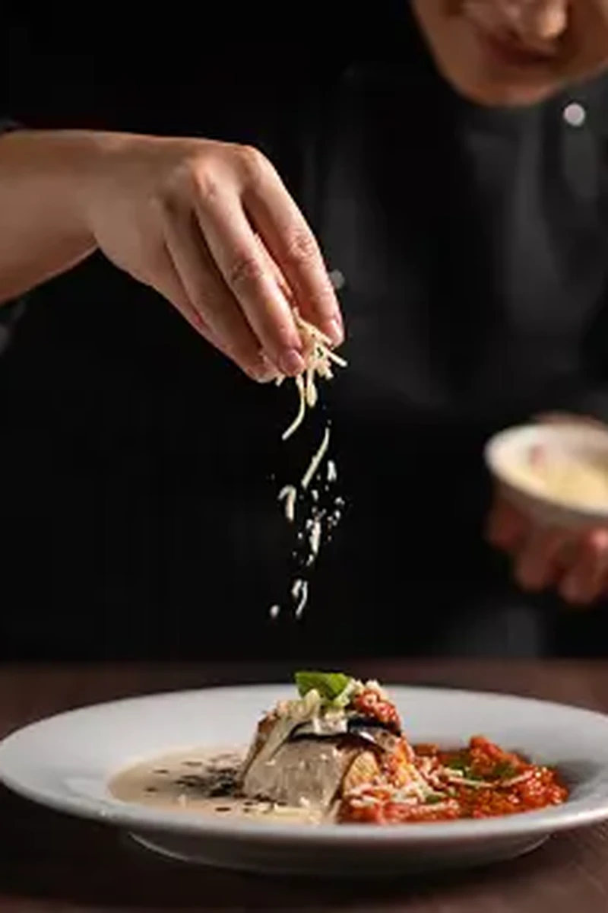
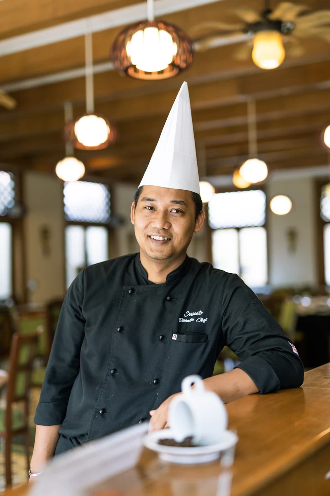

CULINARY MASTERPIECES
The Artistry Gallery
A curated visual odyssey highlighting signature dishes crafted by our master chefs across the 5 worlds.


Journey across Italy, India, China, Japan, and Mexico through unforgettable dining experiences crafted under one roof.
SCROLL TO EXPLOREAtmosphere: Florence, Tuscany, Amalfi Coast
Signature Dishes: Black Truffle Gnocchi, Fiorentina Steak
Design Style: Symmetrical, Michelin-star elegance, high-contrast serif
Atmosphere: Rajasthan Palaces, Mughal Architecture
Signature Dishes: Rogan Josh, Royal Thali Experience
Design Style: Rich storytelling, ornate patterns, saffron & ivory palette
Atmosphere: Shanghai Skyline, Modern Canton
Signature Dishes: Imperial Peking Duck, Jade Dumplings
Design Style: Contemporary geometry, ink-brush effects, jade accents
Atmosphere: Tokyo Omakase Counters, Wabi-Sabi gardens
Signature Dishes: Premium Omakase, A5 Wagyu Beef
Design Style: Soft tones, massive whitespace, precision typography
Atmosphere: Tulum Beach Club, Sunset Rooftops
Signature Dishes: Lobster Tacos, Smoked Mezcal Cocktails
Design Style: Asymmetrical shapes, bold sunset colors, energetic motion
A curated visual odyssey highlighting signature dishes crafted by our master chefs across the 5 worlds.

"True Tuscan luxury is defined by the time and patience poured into making pasta by hand."
"Spices are not heat; they are notes in a symphony that dates back to royal Mughal courts."

"Chinese cuisine is the balance of Yin and Yang, combining fire heat with jade precision."

"Omakase represents absolute trust. In that silence, every knife stroke tells our story."

"Mexican cooking is a living ritual. Vibrant, colorful, and designed for shared celebration."